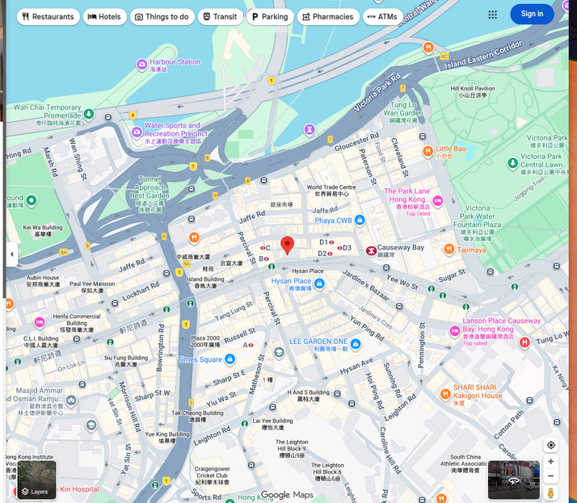
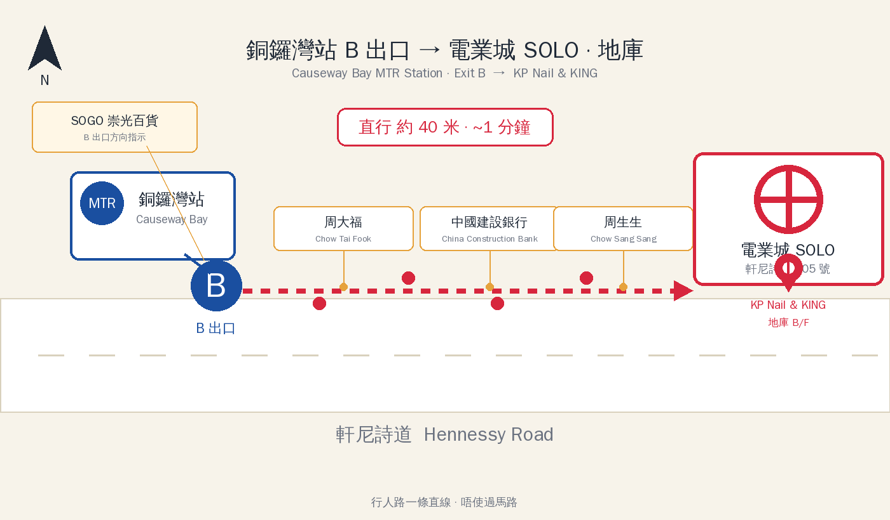
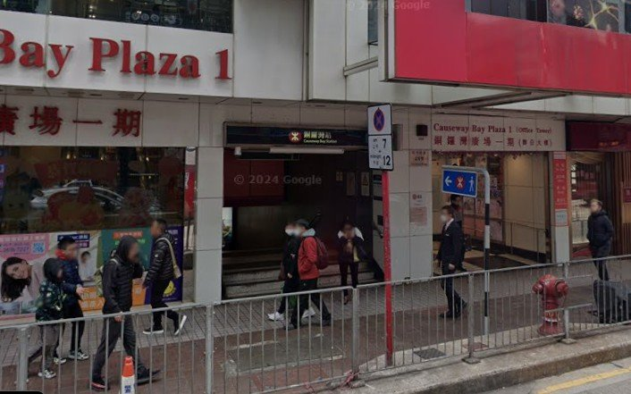
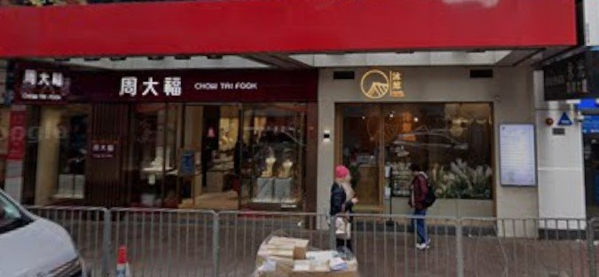
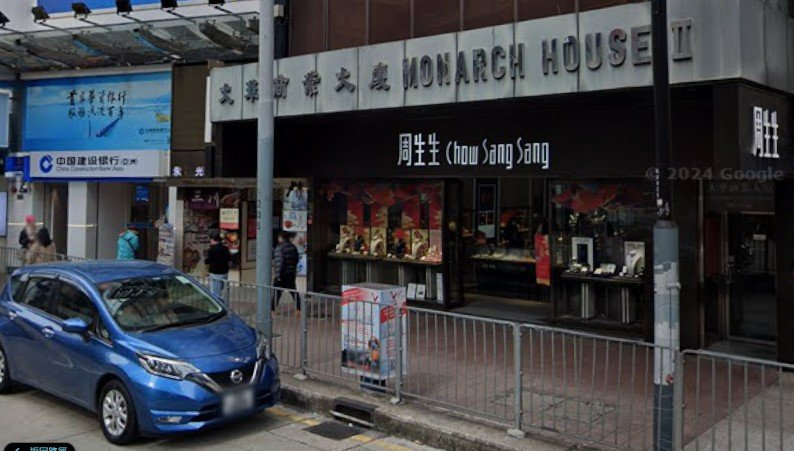
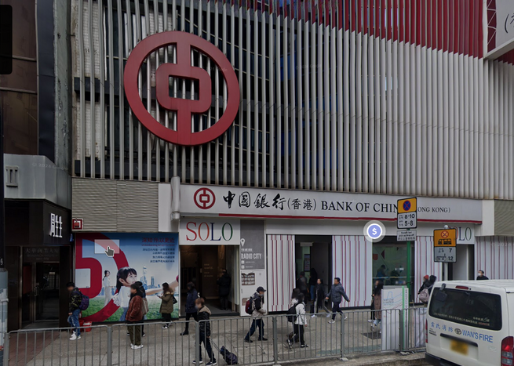
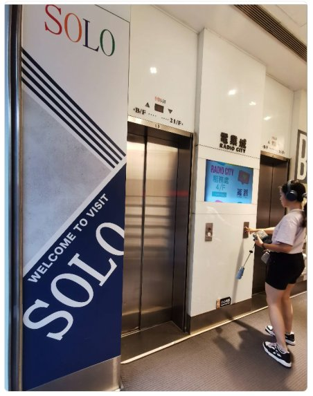

Radio City SoloBasement · Shops B02 & B03
MTR Exit B · ~1 min walk (43 m) · then take the elevator down to the Basement
BMTR Causeway Bay Station Exit B
Turn leftwhen you reach street level
B/F elevator button, press "B"
Streets around 505 Hennessy Road
If you get lost, zoom in here to check the nearby street names at a glance.

505 Hennessy Road · Radio City (SOLO) · 22-storey building
From Causeway Bay MTR to 505 Hennessy Road
The red pin is SOLO (505 Hennessy Rd). The blue circle is the MTR station. The red dashed line is the walking path.

Map data © Google · Total walk ~1 min (43 m)
5 steps to the shop entrance
Follow these 5 steps and you won't get lost — even if you've never been to Causeway Bay.
-
Get off at Causeway Bay MTR Station, follow signs to Exit B, and go up to street levelSigns on the platform and in the concourse read "Exit B · Hennessy Road / SOGO Department Store". Follow the blue B signs — do not use Exits A / C / D / E / F. From Exit B, take the stairs or escalator straight up to the pavement on Hennessy Road.

Real view: Exit B is right next to "Causeway Bay Plaza 1" · you emerge onto the Hennessy Road pavement.🛍️ Once on the street: SOGO Department Store is to your LEFT.
Next step: turn LEFT and walk along the pavement towards SOGO. -
Walk straight, past "Chow Tai Fook" (周大福) firstAfter turning left, walk along Hennessy Road (traffic is on your RIGHT). The first jewellery shop on your LEFT is "Chow Tai Fook 周大福" — it has a bold red sign and is easy to spot. Once you pass it, you're heading the right way. Keep going.

Real view: the first "CHOW TAI FOOK 周大福" on your left confirms you're walking in the correct direction.💎 Orientation check: Chow Tai Fook is on your LEFT; Hennessy Road traffic is on your RIGHT. -
Keep walking — past "China Construction Bank" and "Chow Sang Sang"A few more steps past Chow Tai Fook, on your LEFT you'll see "China Construction Bank 中國建設銀行" followed by "Chow Sang Sang 周生生". Once you see these two, you're almost there — keep going straight; do NOT cross the road.

Real view: "China Construction Bank" + "Chow Sang Sang" under the "MONARCH HOUSE II" building — almost at the destination.🏦 Order of landmarks: Chow Tai Fook → China Construction Bank → Chow Sang Sang → arrive at SOLO. -
Look for the building with the big red circular "Bank of China" logoJust past Chow Sang Sang, on your LEFT you'll see a building with a silver-grey aluminium façade and a large red circular "Bank of China (Hong Kong)" logo. Below the logo, the sign reads "SOLO · RADIO CITY". This is SOLO / Radio City — your destination.

Street view: this is what the building looks like · the red Bank of China logo confirms you've arrived. -
Enter the lobby → take the elevator down to the Basement — shops B02 & B03The lobby entrance is the glass door right next to the Bank of China branch, labelled "RADIO CITY". Inside, you'll see a blue "WELCOME TO VISIT SOLO" banner and two elevators. Press the "B/F" button to go down to the Basement — NOT the 21/F button (that goes up). Exit the elevator and follow the in-mall signs to shops B02 & B03 — that's KP Nail & KING.🛗 Take the elevator, press "B", exit and walk straight past two shops — that's us.
🪜 Or take the stairs down to the Basement, then head to the far right end.
Lobby view: the blue SOLO banner and two elevators · press "B/F" to go to the Basement (NOT 21/F).💅 When you arrive at the shop, give the staff your name / appointment time and we'll take care of you right away.
KP Nail & KING 💅
Causeway Bay nail salon · Google rating 4.5 (33 reviews) · run by a female owner-manicurist.
- Address
- Shops B02 & B03, Basement,
SOLO / Radio City, 505 Hennessy Road,
Causeway Bay, Hong Kong - MTR
- Causeway Bay Station Exit B, turn left, 1-min walk (43 m)
- Phone
- +852 6100 3599
- facebook.com/kpnailking
- Google Maps
- KP Nail & KING listing
- Services
- Manicure · Gel · Hand & foot care
Opening hours
| Monday | 10:00 – 22:00 |
| Tuesday | 10:00 – 22:00 |
| Wednesday | 10:00 – 22:00 |
| Thursday | 10:00 – 22:00 |
| Friday | 19:00 – 22:00 |
| Saturday | 19:00 – 22:00 |
| Sunday | 19:00 – 22:00 |
Hours are subject to change — please confirm with the shop. Booking by phone is recommended.
🚇 Causeway Bay Station Exit B · 43 m
🚌 Hennessy Road / SOGO bus stop
🚕 Taxi to "SOLO / Radio City, 505 Hennessy Road"